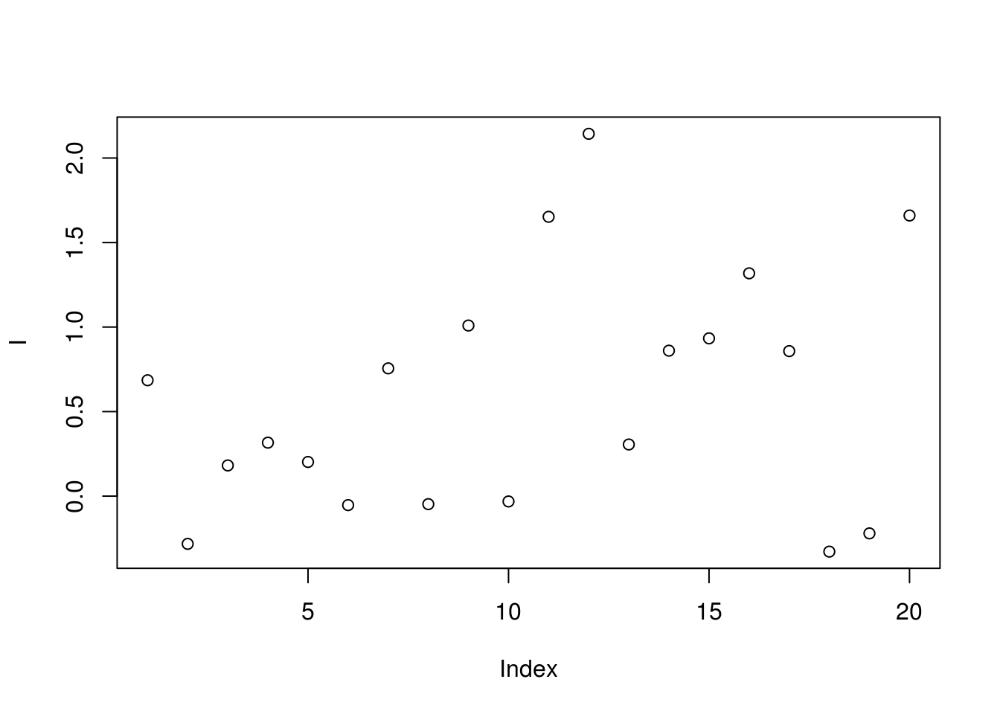
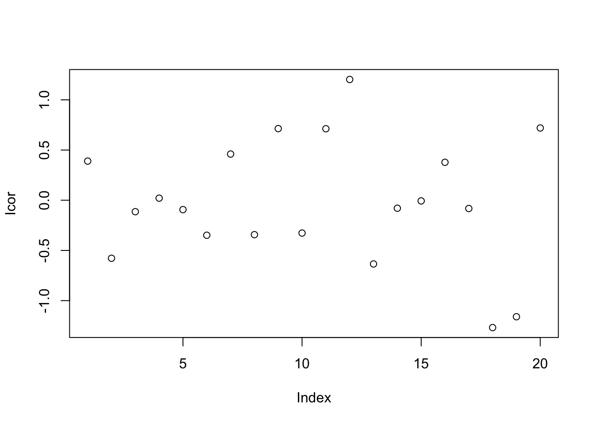
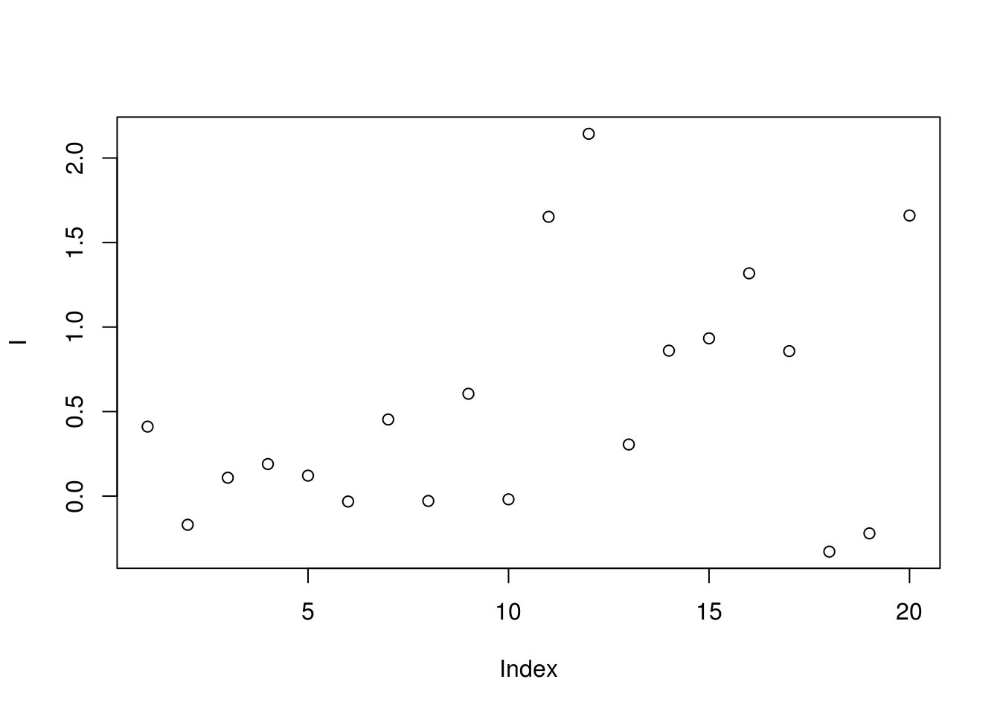
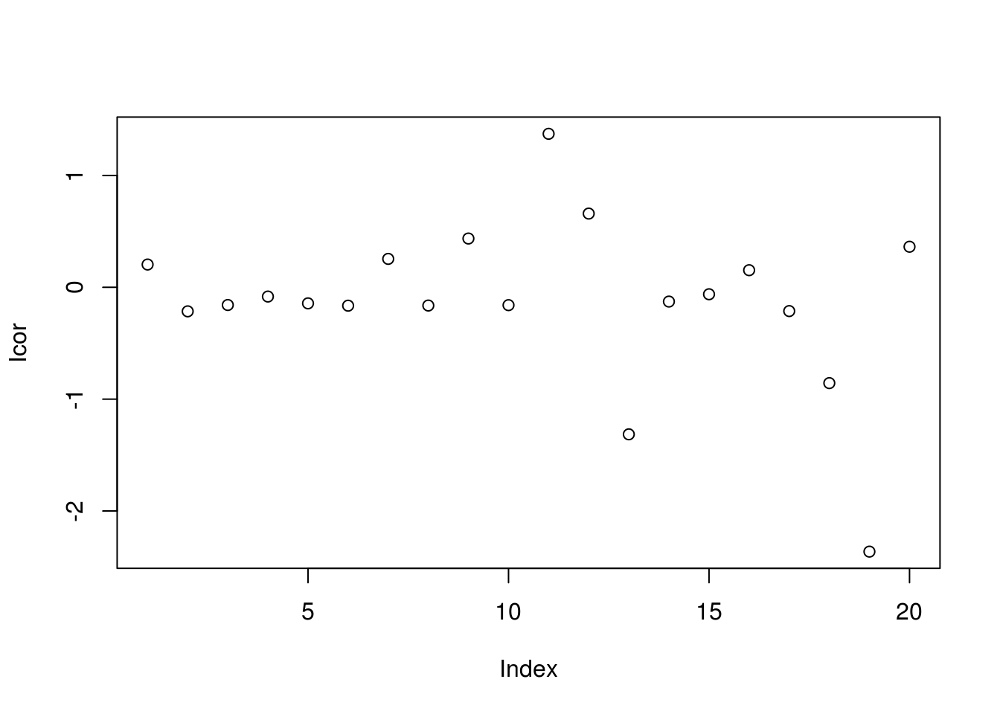
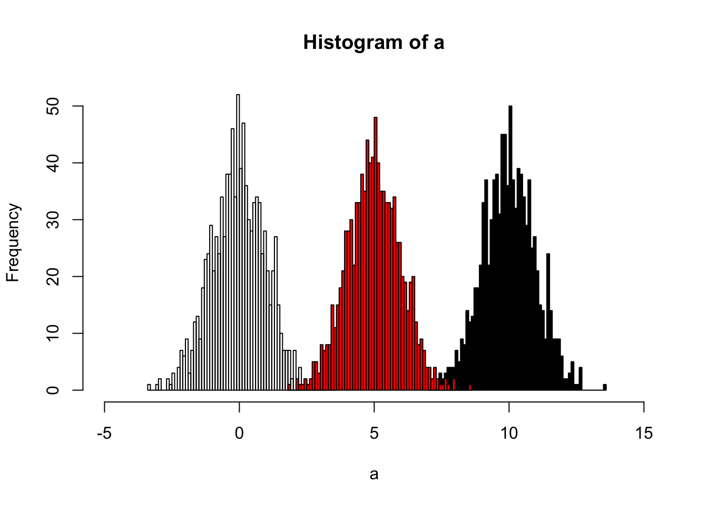
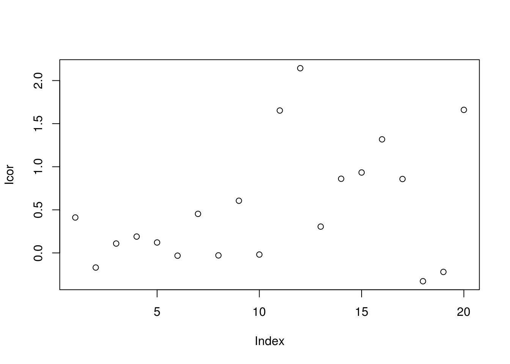
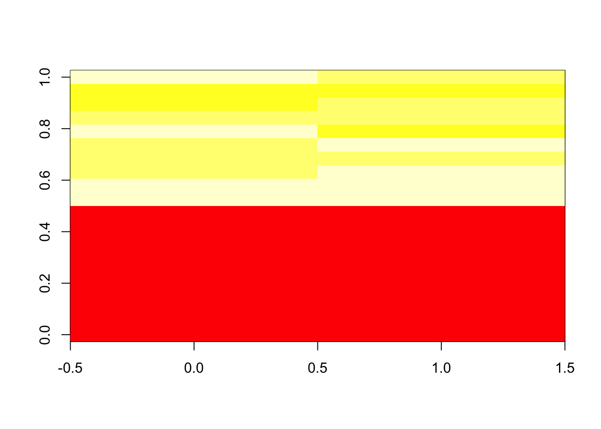

Chapter 4 Raw data pretreatment
Raw data from the instruments such as LC-MS or GC-MS were hard to be analyzed. To make it clear, the structure of those data could be summarised as:
- To get full infomation in the samples, full scan is perferred
- Full scan is performed synchronously with the seperation process
GC/LC-MS data are usually be shown as a matrix with column standing for retention times and row standing for masses. Noises are so much that such data could not be processed effeciently.

Figure 4.1: Demo of GC/LC-MS data
Conversation from the mass-retention time matrix into a vector with selected MS peaks at certain retention time is the basic idea of the Raw data pretreatment. The Centwave algorithm(Tautenhahn, Böttcher, and Neumann 2008) based on detection of regions of interest(ROI) and the following Continuous Wavelet Transform (CWT) for the peaks is preferred for high-resolution mass spectrum.
With many groups of samples, you will get another data matrix with column standing for ions at cerntain retention time and row standing for samples after the Raw data pretreatment.

Figure 4.2: Demo of many GC/LC-MS data
4.1 Spectral deconvolution
Without fracmental infomation about certain compound, the peak extraction would suffer influnces from other compounds. At the same retention time, co-elute compounds might share similar mass. Hard electron ionization methods such as electron impact ionization (EI), APPI suffer this issue. So it would be hard to distighuish the co-elute peaks’ origin and deconvolution method(Du and Zeisel 2013) could be used to seperate different groups according to the similar chromatogragh beheviors. Another computational tool eRah could be a better solution for the whole process(Domingo-Almenara et al. 2016). Also the ADAD-GC3.0 could also be helpful for such issue(Ni et al. 2016).
4.2 Retention Time Correction
However, before you get the peaks, some corrections should be performed such as mass shift and retention time shift. The basic idea behind retention time correction is that use the high quality grouped peaks to make a new retention time. You might choose obiwarp or loess regression method to get the corrected retention time for all of the samples. Remember the original retention times might be changed and you might need cross-correct the data.
(Fu et al. 2017) show a matlab based shift correction methods
4.3 Dynamic Range
Another issue is the Dynamic Range. For metabolomics, peaks could be below the detection limit or over the detection limit. Such Dynamic range issues might raise the loss of information.
4.3.1 Non-detects
Some of the data were limited by the detect of limitation. Thus we need some methods to impute the data if we don’t want to lose information by deleting the NA or 0.
Two major imputation way could be used. The first way is use model-free method such as half the minimum of the values across the data, 0, 1, mean/median across the data( enviGCMS package could do this via getimputation function). The second way is use model-based method such as linear model, random forest, KNN, PCA. Try simputation package for various imputation methods.
Tobit regression is preferred for censored data. Also you might choose maximum likelihood estimation(Estimation of mean and standard deviation by MLE. Creating 10 complete samples. Pool the results from 10 individual analyses).
x <- rnorm(1000,1)
x[x<0] <- 0
y <- x*10+1
library(AER)
tfit <- tobit(y ~ x, left = 0)
summary(tfit)##
## Call:
## tobit(formula = y ~ x, left = 0)
##
## Observations:
## Total Left-censored Uncensored Right-censored
## 1000 0 1000 0
##
## Coefficients:
## Estimate Std. Error z value Pr(>|z|)
## (Intercept) 1.0000 0.4303 2.324 0.0201 *
## x 10.0000 0.3162 31.623 <2e-16 ***
## Log(scale) 2.1502 0.0000 Inf <2e-16 ***
## ---
## Signif. codes: 0 '***' 0.001 '**' 0.01 '*' 0.05 '.' 0.1 ' ' 1
##
## Scale: 8.587
##
## Gaussian distribution
## Number of Newton-Raphson Iterations: 1
## Log-likelihood: -3069 on 3 Df
## Wald-statistic: 1000 on 1 Df, p-value: < 2.22e-164.3.2 Over Detection Limit
CorrectOverloadedPeaks could be used to correct the Peaks Exceeding the Detection Limit issue(Lisec et al. 2016).
4.4 RSD Filter
Some peaks need to be rule out due to high RSD%. See Exprimental design(DoE)
4.5 Power Analysis Filter
As shown in Exprimental design(DoE), the power analysis in metabolomics is ad-hoc since you don’t know too much before you perform the experiment. However, we could perform power analysis after the experiment done. That is, we just rule out the peaks with a lower power in exsit Exprimental design.
4.6 Normalization
Variances among the samples across all the extracted peaks might be affected by factors other than the experiment design. To make the samples comparable, normailization across the samples are always needed. There are more than 20 methods to make normalization. We could devided those methods into two category: unsupervised and supervised.
Unsupervised methods only consider the normalization peaks intensity distribution across the samples. For example, quantile calibration try to make the intensity distribution among the samples similar. Such methods are preferred to explore the inner structures of the samples. Internal standards or pool QC samples also belong to this category. However, it’s hard to take a few peaks standing for all peaks extracted.
Supervised methods will use the group information or batch information in experimental design to normalize the data. A linear model is always used to model the unwanted variances and remove them for further analysis.
Since the real batch effects are always unknown, it’s hard to make validation for different normalization methods. Wu et.al preferred to make comparision between new methods and conventional methods(Wu and Li 2016). Li et.al developed NOREVA to make comparision among 25 correction method(Li et al. 2017). Another idea is use spiked-in samples to validate the methods(Franceschi et al. 2012), which might be good for targeted analysis instead of non-targeted analysis.
Relative log abundance (RLA) plots(De Livera et al. 2012) and heatmap often used to show the variances among the samples.
(Thonusin et al. 2017) some methods for batch correction in excel
4.6.1 Unsupervised methods
4.6.1.1 Distribution of intensity
Intensity collects from LC/GC-MS always showed a right-skewed distribution. Log transformation is often necessary for further statistical analysis. In some case, a Log-transformated intensity could be visulizated easily.
4.6.1.2 Centering
For peak p of sample s in batch b, the corrected abundance I is:
\[\hat I_{p,s,b} = I_{p,s,b} - mean(I_{p,b}) + median(I_{p,qc})\]
For example, we have the intensities of one peak from ten samples in two batches like the following demo:
set.seed(42)
# raw data
I = c(rnorm(10,mean = 0, sd = 0.5),rnorm(10,mean = 1, sd = 0.5))
# batch
B = c(rep(0,10),rep(1,10))
# qc
Iqc = c(rnorm(1,mean = 0, sd = 0.5),rnorm(1,mean = 1, sd = 0.5))
# corrected data
Icor = I - c(rep(mean(I[1:10]),10),rep(mean(I[11:20]),10)) + median(Iqc)
# plot the result
plot(I)
plot(Icor)
4.6.1.3 Scaling
For peak p of sample s in certain batch b, the corrected abundance I is:
\[\hat I_{p,s,b} = \frac{I_{p,s,b} - mean(I_{p,b})}{std_{p,b}} * std_{p,qc,b} + mean(I_{p,qc,b})\]
For example, we have the intensities of one peak from ten samples in two batches like the following demo:
set.seed(42)
# raw data
I = c(rnorm(10,mean = 0, sd = 0.3),rnorm(10,mean = 1, sd = 0.5))
# batch
B = c(rep(0,10),rep(1,10))
# qc
Iqc = c(rnorm(1,mean = 0, sd = 0.3),rnorm(1,mean = 1, sd = 0.5))
# corrected data
Icor = (I - c(rep(mean(I[1:10]),10),rep(mean(I[11:20]),10)))/c(sd(I[1:10]),sd(I[11:20]))*c(rep(0.3,10),rep(0.5,10)) + Iqc[1]
# plot the result
plot(I)
plot(Icor)
4.6.1.4 Quantile
The idea of quantile calibration is that alignment of the intensities in certain samples according to quantiles in each sample.
Here is the demo:
set.seed(42)
a <- rnorm(1000)
# b sufferred batch effect with a bias of 10
b <- rnorm(1000,10)
hist(a,xlim=c(-5,15),breaks = 50)
hist(b,col = 'black', breaks = 50, add=T)
# quantile normalized
cor <- (a[order(a)]+b[order(b)])/2
# reorder
cor <- cor[order(order(a))]
hist(cor,col = 'red', breaks = 50, add=T)
4.6.1.5 Ratio based calibraton
This method calibrates samples by the ratio between qc samples in all samples and in certain batch.For peak p of sample s in certain batch b, the corrected abundance I is:
\[\hat I_{p,s,b} = \frac{I_{p,s,b} * median(I_{p,qc})}{mean_{p,qc,b}}\]
set.seed(42)
# raw data
I = c(rnorm(10,mean = 0, sd = 0.3),rnorm(10,mean = 1, sd = 0.5))
# batch
B = c(rep(0,10),rep(1,10))
# qc
Iqc = c(rnorm(1,mean = 0, sd = 0.3),rnorm(1,mean = 1, sd = 0.5))
# corrected data
Icor = I * median(c(rep(Iqc[1],10),rep(Iqc[2],10)))/mean(c(rep(Iqc[1],10),rep(Iqc[2],10)))
# plot the result
plot(I)plot(Icor)
4.6.1.6 Linear Normalizer
This method initially scales each sample so that the sum of all peak abundances equals one. In this study, by multiplying the median sum of all peak abundances across all samples,we got the corrected data.
set.seed(42)
# raw data
peaksa <- c(rnorm(10,mean = 10, sd = 0.3),rnorm(10,mean = 20, sd = 0.5))
peaksb <- c(rnorm(10,mean = 10, sd = 0.3),rnorm(10,mean = 20, sd = 0.5))
df <- rbind(peaksa,peaksb)
dfcor <- df/apply(df,2,sum)* sum(apply(df,2,median))
image(df)
image(dfcor)
4.6.1.7 Internal standards
\[\hat I_{p,s} = \frac{I_{p,s} * median(I_{IS})}{I_{IS,s}}\]
Some methods also use pooled calibration samples and multiple internal standard strategy to correct the data(???). Also some methods only use QC samples to handle the data(Kuligowski et al. 2015).
4.6.2 Supervised methods
4.6.2.1 Regression calibration
Considering the batch effect of injection order, regress the data by a linear model to get the calibration.
4.6.2.2 Batch Normalizer
Use the total abundance scale and then fit with the regression line(Wang, Kuo, and Tseng 2013).
4.6.2.3 Surrogate Variable Analysis(SVA)
We have a data matrix(M*N) with M stands for indentity peaks from one sample and N stand for individual samples. For one sample, \(X = (x_{i1},...,x_{in})^T\) stands for the normalized intensities of peaks. We use \(Y = (y_i,...,y_m)^T\) stands for the group infomation of our data. Then we could build such modles:
\[x_{ij} = \mu_i + f_i(y_i) + e_{ij}\]
\(\mu_i\) stands for the baseline of the peak intensities in a normal state. Then we have:
\[f_i(y_i) = E(x_{ij}|y_j) - \mu_i\]
stands for the biological variations caused by the our group, for example, whether treated by pollutions or not.
However, considering the batch effects, the real model could be:
\[x_{ij} = \mu_i + f_i(y_i) + \sum_{l = 1}^L \gamma_{li}p_{lj} + e_{ij}^*\] \(\gamma_{li}\) stands for the peak-specific coefficient for potentical factor \(l\). \(p_{lj}\) stands for the potential factors across the samples. Actually, the error item \(e_{ij}\) in real sample could always be decomposed as \(e_{ij} = \sum_{l = 1}^L \gamma_{li}p_{lj} + e_{ij}^*\) with \(e_{ij}^*\) standing for the real random error in certain sample for certain peak.
We could not get the potential factors directly. Since we don’t care the details of the unknown factors, we could estimate orthogonal vectors \(h_k\) standing for such potential factors. Thus we have:
\[ x_{ij} = \mu_i + f_i(y_i) + \sum_{l = 1}^L \gamma_{li}p_{lj} + e_{ij}^*\\ = \mu_i + f_i(y_i) + \sum_{k = 1}^K \lambda_{ki}h_{kj} + e_{ij} \]
Here is the details of the algorithm:
The algorithm is decomposed into two parts: detection of unmodeled factors and construction of surrogate variables
4.6.2.3.1 Detection of unmodeled factors
Estimate \(\hat\mu_i\) and \(f_i\) by fitting the model \(x_{ij} = \mu_i + f_i(y_i) + e_{ij}\) and get the residual \(r_{ij} = x_{ij}-\hat\mu_i - \hat f_i(y_i)\). Then we have the residual matrix R.
Perform the singular value decompositon(SVD) of the residual matrix \(R = UDV^T\)
Let \(d_l\) be the \(l\)th eigenvalue of the diagonal matrix D for \(l = 1,...,n\). Set \(df\) as the freedom of the model \(\hat\mu_i + \hat f_i(y_i)\). We could build a statistic \(T_k\) as:
\[T_k = \frac{d_k^2}{\sum_{l=1}^{n-df}d_l^2}\]
to show the variance explained by the \(k\)th eigenvalue.
Permute each row of R to remove the structure in the matrix and get \(R^*\).
Fit the model \(r_{ij}^* = \mu_i^* + f_i^*(y_i) + e^*_{ij}\) and get \(r_{ij}^0 = r^*_{ij}-\hat\mu^*_i - \hat f^*_i(y_i)\) as a null matrix \(R_0\)
Perform the singular value decompositon(SVD) of the residual matrix \(R_0 = U_0D_0V_0^T\)
Compute the null statistic:
\[ T_k^0 = \frac{d_{0k}^2}{\sum_{l=1}^{n-df}d_{0l}^2} \]
Repeat permuting the row B times to get the null statistics \(T_k^{0b}\)
Get the p-value for eigengene:
\[p_k = \frac{\#{T_k^{0b}\geq T_k;b=1,...,B }}{B}\]
- For a significance level \(\alpha\), treat k as a significant signature of residual R if \(p_k\leq\alpha\)
4.6.2.3.2 Construction of surrogate variables
Estimate \(\hat\mu_i\) and \(f_i\) by fitting the model \(x_{ij} = \mu_i + f_i(y_i) + e_{ij}\) and get the residual \(r_{ij} = x_{ij}-\hat\mu_i - \hat f_i(y_i)\). Then we have the residual matrix R.
Perform the singular value decompositon(SVD) of the residual matrix \(R = UDV^T\). Let \(e_k = (e_{k1},...,e_{kn})^T\) be the \(k\)th column of V
Set \(\hat K\) as the significant eigenvalues found by the first step.
Regress each \(e_k\) on \(x_i\), get the p-value for the association.
Set \(\pi_0\) as the proportion of the peak intensitity \(x_i\) not associate with \(e_k\) and find the numbers \(\hat m =[1-\hat \pi_0 \times m]\) and the indices of the peaks associated with the eigenvalues
Form the matrix \(\hat m_1 \times N\), this matrix\(X_r\) stand for the potiential variables. As was done for R, get the eigengents of \(X_r\) and denote these by \(e_j^r\)
Let \(j^* = argmax_{1\leq j \leq n}cor(e_k,e_j^r)\) and set \(\hat h_k=e_j^r\). Set the estimate of the surrogate variable to be the eigenvalue of the reduced matrix most correlated with the corresponding residual eigenvalue. Since the reduced matrix is enriched for peaks associated with this residual eigenvalue, this is a principled choice for the estimated surrogate variable that allows for correlation with the primary variable.
Employ the \(\mu_i + f_i(y_i) + \sum_{k = 1}^K \gamma_{ki}\hat h_{kj} + e_{ij}\) as te estimate of the ideal model \(\mu_i + f_i(y_i) + \sum_{k = 1}^K \gamma_{ki}h_{kj} + e_{ij}\)
This method could found the potentical unwanted variables for the data. SVA were introduced by Jeff Leek(Leek et al. 2012; Leek and Storey 2007; Leek and Storey 2008) and EigenMS package implement SVA with modifications including analysis of data with missing values that are typical in LC-MS experiments(Karpievitch et al. 2014).
4.6.2.4 RUV (Remove Unwanted Variation)
This method’s performance is similar to SVA. Instead find surrogate variable from the whole dataset. RUA use control or pool QC to find the unwanted variances and remove them to find the peaks related to experimental design. RUA-random(Livera et al. 2015) furthor use linear mixed model to estimate the variances of random error. This method could be used with suitable control, which is commen in metabolomics DoE.
4.6.2.5 RRmix
RRmix also use a latent factor models correct the data(Jr et al. 2017). This method could be treated as linear mixed model version SVA. No control samples are required and the unwanted variances could be removed by factor analysis. This method might be the best choise to remove the unwanted variables with commen experiment design.
References
Tautenhahn, Ralf, Christoph Böttcher, and Steffen Neumann. 2008. “Highly Sensitive Feature Detection for High Resolution LC/MS.” BMC Bioinformatics 9: 504. doi:10.1186/1471-2105-9-504.
Du, Xiuxia, and Steven H Zeisel. 2013. “SPECTRAL DECONVOLUTION FOR GAS CHROMATOGRAPHY MASS SPECTROMETRY-BASED METABOLOMICS: CURRENT STATUS AND FUTURE PERSPECTIVES.” Computational and Structural Biotechnology Journal 4 (5): 1–10. doi:10.5936/csbj.201301013.
Domingo-Almenara, Xavier, Jesus Brezmes, Maria Vinaixa, Sara Samino, Noelia Ramirez, Marta Ramon-Krauel, Carles Lerin, et al. 2016. “ERah: A Computational Tool Integrating Spectral Deconvolution and Alignment with Quantification and Identification of Metabolites in GC/MS-Based Metabolomics.” Anal. Chem. 88 (19): 9821–9. doi:10.1021/acs.analchem.6b02927.
Ni, Yan, Mingming Su, Yunping Qiu, Wei Jia, and Xiuxia Du. 2016. “ADAP-GC 3.0: Improved Peak Detection and Deconvolution of Co-Eluting Metabolites from GC/TOF-MS Data for Metabolomics Studies.” Anal. Chem. 88 (17): 8802–11. doi:10.1021/acs.analchem.6b02222.
Fu, Hai-Yan, Ou Hu, Yue-Ming Zhang, Li Zhang, Jing-Jing Song, Peang Lu, Qing-Xia Zheng, et al. 2017. “Mass-Spectra-Based Peak Alignment for Automatic Nontargeted Metabolic Profiling Analysis for Biomarker Screening in Plant Samples.” Journal of Chromatography A 1513 (Supplement C): 201–9. doi:10.1016/j.chroma.2017.07.044.
Lisec, Jan, Friederike Hoffmann, Clemens Schmitt, and Carsten Jaeger. 2016. “Extending the Dynamic Range in Metabolomics Experiments by Automatic Correction of Peaks Exceeding the Detection Limit.” Anal. Chem. 88 (15): 7487–92. doi:10.1021/acs.analchem.6b02515.
Wu, Yiman, and Liang Li. 2016. “Sample Normalization Methods in Quantitative Metabolomics.” Journal of Chromatography A, Editors’ choice x, 1430 (January): 80–95. doi:10.1016/j.chroma.2015.12.007.
Li, Bo, Jing Tang, Qingxia Yang, Shuang Li, Xuejiao Cui, Yinghong Li, Yuzong Chen, Weiwei Xue, Xiaofeng Li, and Feng Zhu. 2017. “NOREVA: Normalization and Evaluation of MS-Based Metabolomics Data.” Nucleic Acids Res 45 (W1): W162–W170. doi:10.1093/nar/gkx449.
Franceschi, Pietro, Domenico Masuero, Urska Vrhovsek, Fulvio Mattivi, and Ron Wehrens. 2012. “A Benchmark Spike-in Data Set for Biomarker Identification in Metabolomics.” J. Chemometrics 26 (1-2): 16–24. doi:10.1002/cem.1420.
De Livera, Alysha M., Daniel A. Dias, David De Souza, Thusitha Rupasinghe, James Pyke, Dedreia Tull, Ute Roessner, Malcolm McConville, and Terence P. Speed. 2012. “Normalizing and Integrating Metabolomics Data.” Anal. Chem. 84 (24): 10768–76. doi:10.1021/ac302748b.
Thonusin, Chanisa, Heidi B. IglayReger, Tanu Soni, Amy E. Rothberg, Charles F. Burant, and Charles R. Evans. 2017. “Evaluation of Intensity Drift Correction Strategies Using MetaboDrift, a Normalization Tool for Multi-Batch Metabolomics Data.” Journal of Chromatography A, Pushing the boundaries of chromatography and electrophoresis, 1523 (Supplement C): 265–74. doi:10.1016/j.chroma.2017.09.023.
Kuligowski, Julia, Ángel Sánchez-Illana, Daniel Sanjuán-Herráez, Máximo Vento, and Guillermo Quintás. 2015. “Intra-Batch Effect Correction in Liquid Chromatography-Mass Spectrometry Using Quality Control Samples and Support Vector Regression (QC-SVRC).” Analyst 140 (22): 7810–7. doi:10.1039/C5AN01638J.
Wang, San-Yuan, Ching-Hua Kuo, and Yufeng J. Tseng. 2013. “Batch Normalizer: A Fast Total Abundance Regression Calibration Method to Simultaneously Adjust Batch and Injection Order Effects in Liquid Chromatography/Time-of-Flight Mass Spectrometry-Based Metabolomics Data and Comparison with Current Calibration Methods.” Anal. Chem. 85 (2): 1037–46. doi:10.1021/ac302877x.
Leek, Jeffrey T., W. Evan Johnson, Hilary S. Parker, Andrew E. Jaffe, and John D. Storey. 2012. “The Sva Package for Removing Batch Effects and Other Unwanted Variation in High-Throughput Experiments.” Bioinformatics 28 (6): 882–83. doi:10.1093/bioinformatics/bts034.
Leek, Jeffrey T., and John D. Storey. 2007. “Capturing Heterogeneity in Gene Expression Studies by Surrogate Variable Analysis.” PLOS Genet 3 (9): e161. doi:10.1371/journal.pgen.0030161.
Leek, Jeffrey T., and John D. Storey. 2007. “Capturing Heterogeneity in Gene Expression Studies by Surrogate Variable Analysis.” PLOS Genet 3 (9): e161. doi:10.1371/journal.pgen.0030161.
2008. “A General Framework for Multiple Testing Dependence.” PNAS 105 (48): 18718–23. doi:10.1073/pnas.0808709105.Karpievitch, Yuliya V., Sonja B. Nikolic, Richard Wilson, James E. Sharman, and Lindsay M. Edwards. 2014. “Metabolomics Data Normalization with EigenMS.” PLOS ONE 9 (12): e116221. doi:10.1371/journal.pone.0116221.
Livera, Alysha M. De, Marko Sysi-Aho, Laurent Jacob, Johann A. Gagnon-Bartsch, Sandra Castillo, Julie A. Simpson, and Terence P. Speed. 2015. “Statistical Methods for Handling Unwanted Variation in Metabolomics Data.” Anal. Chem. 87 (7): 3606–15. doi:10.1021/ac502439y.
Jr, Stephen Salerno, Mahya Mehrmohamadi, Maria V. Liberti, Muting Wan, Martin T. Wells, James G. Booth, and Jason W. Locasale. 2017. “RRmix: A Method for Simultaneous Batch Effect Correction and Analysis of Metabolomics Data in the Absence of Internal Standards.” PLOS ONE 12 (6): e0179530. doi:10.1371/journal.pone.0179530.